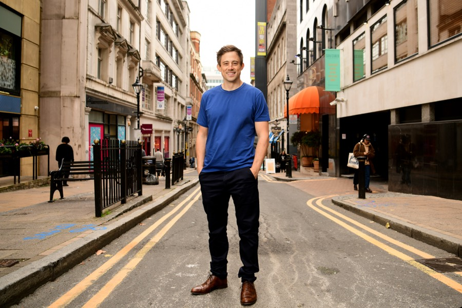
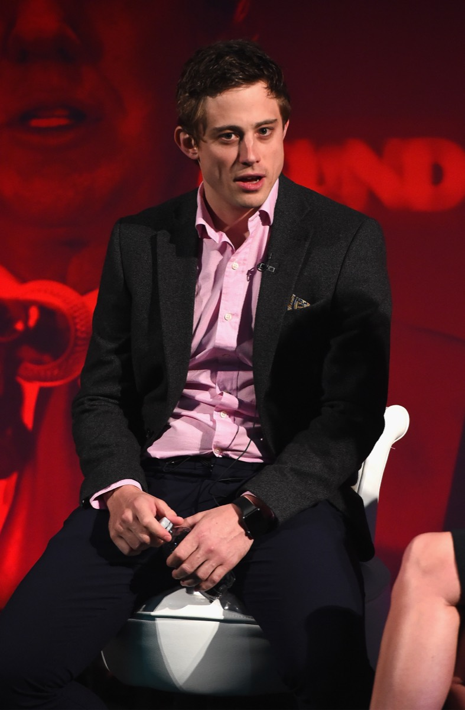
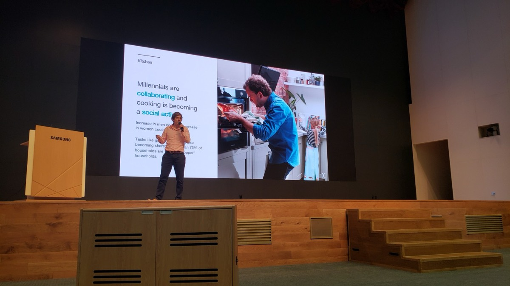
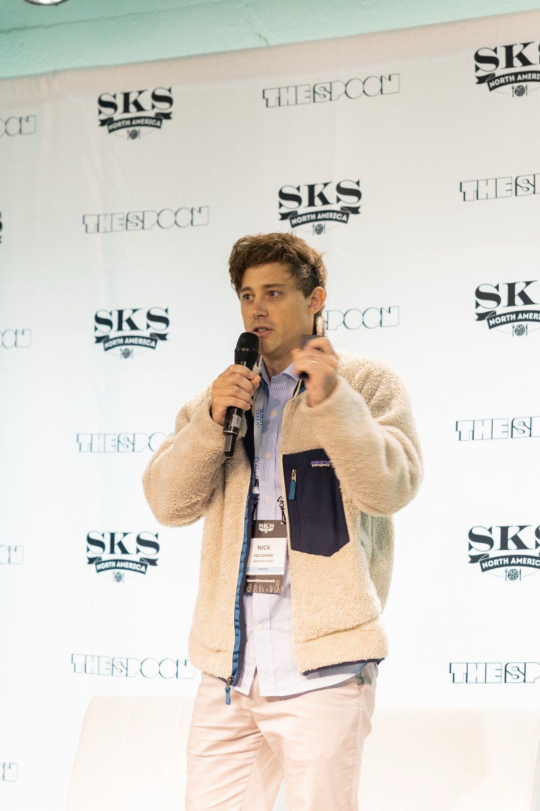
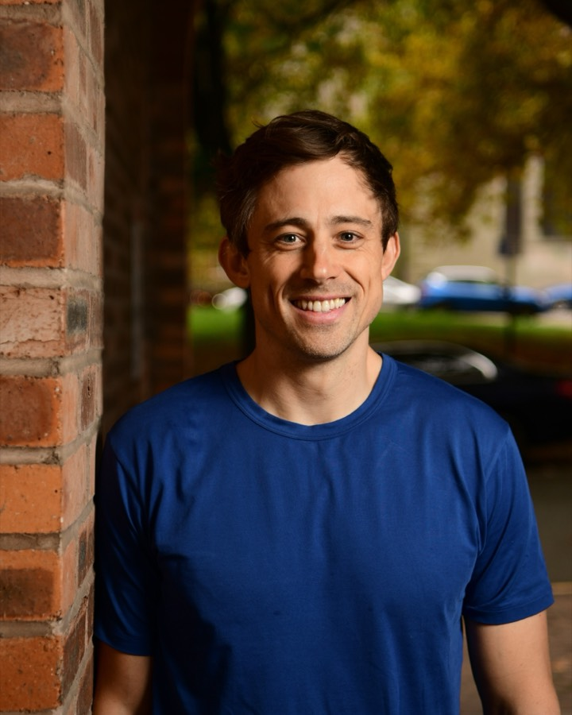

The journey
From the Swiss Alps to The Apprentice, a decade of Whisk, six years inside Samsung — and now GitLaw.
Current headshots


Shot October 2025 · download full-resolution
Born and raised in Switzerland — mountains, skiing, and a first taste of doing things properly.
Co-Go — a coffee business and the first company, started while studying at Aston University in Birmingham.
Finalist on BBC's The Apprentice with Lord Sugar — pitching what would become Whisk in front of eight million people, and landing on magazine front covers.
Building Whisk from Birmingham's iCentrum into an AI food platform used by the world's biggest food brands — one of the earliest fully distributed teams, growing to 120 people worldwide.





Samsung acquires Whisk. The team joins Samsung's ecosystem, and the platform starts its journey toward every Samsung kitchen.


Leading the platform inside Samsung for six years — relaunched globally as Samsung Food in 2023, on stage at Samsung Developer Conference, CES Innovation Award winner.




Venture three: GitLaw — the AI agent for contracts. Drafting, reviewing, and managing legal documents for growing businesses.
